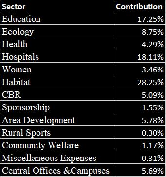
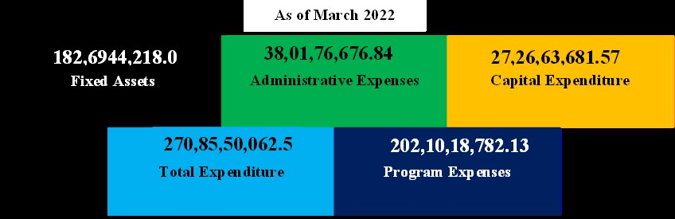

Rural Development Trust (RDT) Anantapur is a dynamic organization dedicated to fostering sustainable development and positive change in the Anantapur district. Established with a vision to empower local communities, RDT Anantapur has been actively involved in various initiatives aimed at improving the socio-economic conditions of the region.


Organizational Structure of RDT
Senior Core Team:
>> The Board of Trustees has entrusted the responsibility for the implementation of strategies, policies, and decisions pertaining to operational management, including financial oversight, to RDT's Senior Core Team.>> This team, led by the Executive Director, consists of sector and regional directors. Their role encompasses the effective execution of the directives established by the Board, ensuring the efficient management of RDT's operations.
General Core Team:
>> RDT's Core Team holds the responsibility for the initiation and review of programs and projects across the organization.
>> This team is comprised of regional directors, area team leaders overseeing program implementation in 75-100 villages, and is presided over by the Programme Director.
>> Their collective role involves the inception and evaluation of initiatives throughout the organization, ensuring alignment with overarching objectives.
>> The Program Director serves as the chairperson, providing leadership and coordination to foster the effective execution of RDT's programs and projects.
Women Core Team:
The Women's Core Team comprises senior female staff members representing various departments and positions within RDT. The primary objectives of this team include:>> Providing a platform for women staff members to openly express concerns related to gender issues.
>> Conducting training and capacity-building initiatives. Advocating and influencing area teams to enhance the participation and involvement of women in all program activities.
>> Integrating a gender-sensitive approach into all organizational activities.
>> Addressing individual instances of discrimination. This dedicated team plays a pivotal role in fostering an inclusive and gender-responsive environment within RDT, ensuring the well-being and equitable engagement of women across the organization.